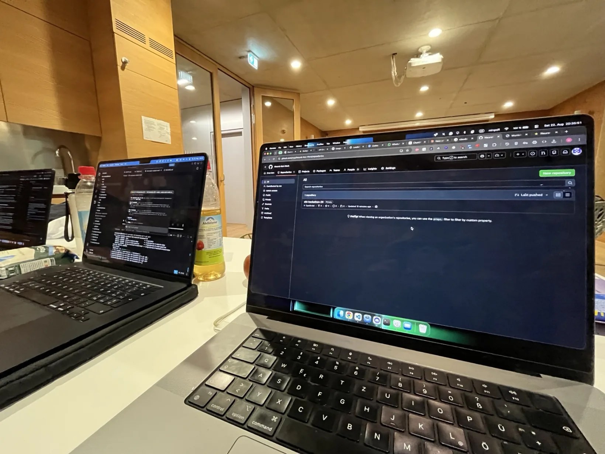

AI video / Full stack
Reframe
A 24-hour hackathon build that turns one video into validated, platform-ready crops without padding, letterboxing or losing the subject.
- Role
- Video pipeline · orchestration · UI
- Timeline
- 22-23 Aug 2026 (24 hours)
- Team
- Kartik, Sami and me
- Status
- Working MVP

One finished video rarely fits every platform.
People often shoot a video for just one target platform (e.g. horizontal 16:9 for YouTube). Later they might want to reuse it on other platforms quickly, to save time and money. Unfortunately, simply cutting out the centre loses faces, and fitting the whole frame creates bars or blurred padding.
At the European Hackathon League 2026 stop at TUM, the challenge from Cognition (the company behind Devin) gave us the perfect opportunity to solve this. We had to use Devin agents to optimise a task and let them run their own feedback loop, continuously improving themselves and cutting the human out of the loop.
You upload a video and describe what you want, for example "a LinkedIn post and an Instagram reel, max 30 seconds". Devin turns that into a list of formats, and every format gets its own agent session. React and Vite run the website, Fastify the API and FFmpeg does the cutting.
I connected Devin to the video pipeline (with a local fallback when Devin isn't available) and worked on tracking. One of our test clips had several people in it, and the crop kept jumping to someone who wasn't even speaking at that moment. Keeping the crop on the right person, across cuts and short gaps in face detection, became a big part of my work. I also built the AI shortening, the audience review and a first multi-clip editor.

We didn't want an AI alone to decide whether a crop is good, since AI reviewers can be biased. So plain code checks the hard facts first (resolution, audio, length, black bars, face in frame), and only then does an LLM watch the video as the audience. A failed render goes back with the exact complaint, up to 3 tries per format. After that, you still get the last playable version, marked as unvalidated.
By the end of the 24 hours, the MVP worked end to end for landscape and portrait videos. It's still a hackathon project, but it showed that agent reviews and simple rule checks work well together.
Explore the source code